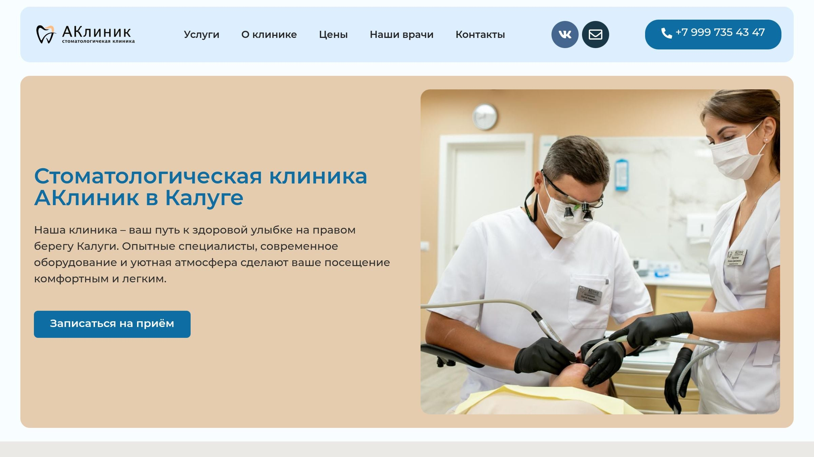
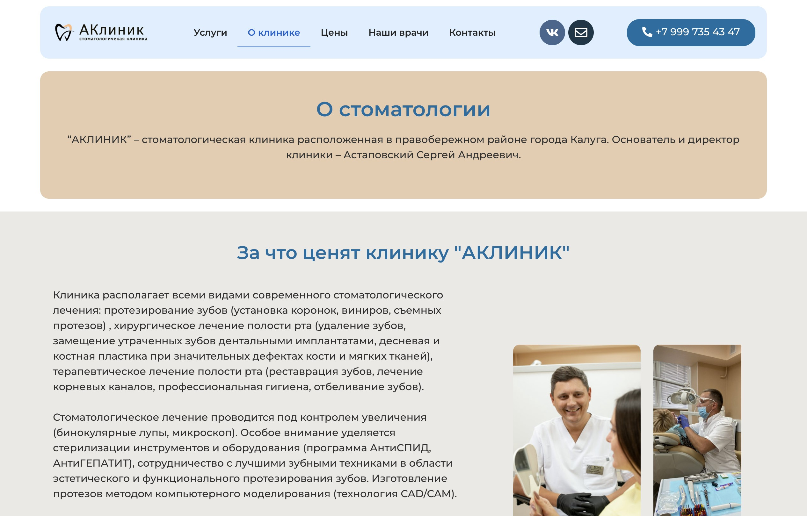

ПОРТФОЛИО / СТОМАТОЛОГИЯ
АКлиник.
Сайт стоматологической клиники
На сайте клиники представлены направления стоматологической помощи, врачи, цены и информация о клинике.
Посетить сайт (откроется в новой вкладке)- ПРОЕКТ
- Сайт клиники
- СФЕРА
- Стоматология
- ПЛАТФОРМА
- WordPress / Elementor
ПРОЕКТ В ДЕТАЛЯХ
A-CLINIC40.RU / 03

01 / О ПРОЕКТЕ
Знакомство
с клиникой и услугами.
«АКлиник» — стоматологическая клиника, предлагающая лечение, хирургию, протезирование и гигиену.
На сайте можно познакомиться с услугами и врачами, изучить цены и найти контакты клиники.
Открыть a-clinic40.ru (откроется в новой вкладке)02 / О КЛИНИКЕ
Больше
о клинике.
Отдельная страница посвящена клинике и знакомству с ней.

ВАШ ПРОЕКТ / НАЧНЁМ С РАЗГОВОРА